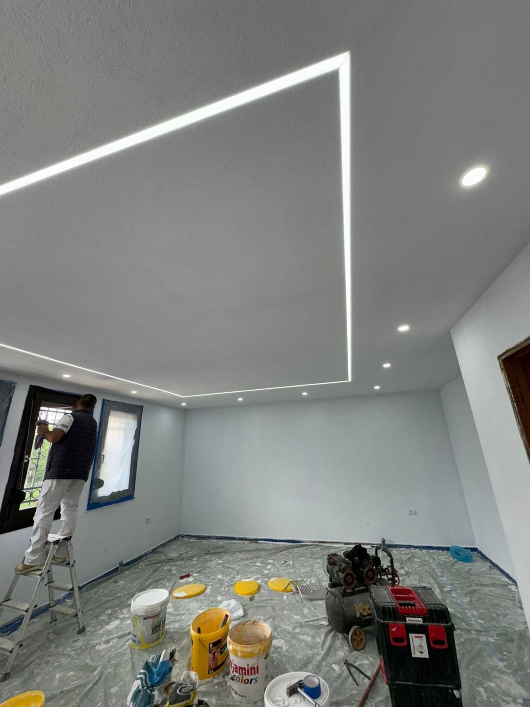

Raumtrennwände
Ein Arbeitsbereich im Wohnraum oder eine neue Zimmeraufteilung: Wir besprechen Maße, Türen und Anschlüsse und schaffen eine passende Lösung.
MEL MALER · TROCKENBAU
Ein zusätzlicher Raum, eine klare Trennung oder eine neue Decke: Mit Trockenbau lässt sich vorhandener Platz anders nutzen. Wir planen die Ausführung passend zu Ihrem Vorhaben.
Trockenbau anfragen ↗
WAS WIR FÜR SIE TUN
Wir stimmen die Arbeiten auf Ihre Räume, Ihre Wünsche und die Gegebenheiten vor Ort ab.
Ein Arbeitsbereich im Wohnraum oder eine neue Zimmeraufteilung: Wir besprechen Maße, Türen und Anschlüsse und schaffen eine passende Lösung.
Abgehängte Decken und Wandverkleidungen können Räume neu strukturieren. Benötigte Öffnungen, Anschlüsse und spätere Oberflächen stimmen wir im Vorfeld ab.
Anforderungen an Schall- und Wärmedämmung sowie die gewünschte Oberflächenqualität werden bei der Planung berücksichtigt. Der Aufbau richtet sich nach den Gegebenheiten vor Ort.
Abgehängte Decken bieten Platz für indirekte Beleuchtung und Einbaustrahler – wie bei unserer Decke mit geschwungenen Lichtvouten.
Mit Dämmung im Ständerwerk und mehrlagiger Beplankung lässt sich der Schallschutz einer Trennwand verbessern.
Leitungen verkleiden oder Nischen schaffen: Mit Trockenbau lassen sich Räume gezielt anpassen. Was sinnvoll ist, klären wir vor Ort.
VORHER / NACHHER
Ziehen Sie im Bild nach links oder rechts: dieselbe Decke im Rohzustand und nach der Fertigstellung mit indirekter LED-Beleuchtung.
MEL Trockenbau-Projekt · Echtes Vorher-/Nachher-Bildpaar
INTERAKTIVSTÄNDERWAND-RECHNER
Länge, Höhe und Aufbau wählen: Die Wand baut sich live auf und der Rechner zeigt den Materialbedarf als Richtwert.
Überschlägige Materialschätzung für eine Ständerwand mit 62,5 cm Achsabstand, beidseitig beplankt, inkl. ca. 10 % Verschnitt bei den Platten. Anschlüsse, Türzargen, Zubehör sowie Brand- und Schallschutzanforderungen klären wir bei der Planung.
Ergebnis als Anfrage übernehmen ↗AUS UNSEREN PROJEKTEN
Trockenbau von MEL – von der Unterkonstruktion bis zur fertigen Fläche.
SO LÄUFT ES AB
Wir messen auf, klären Anschlüsse, Türen, Leitungen und Anforderungen an Schallschutz.
UW-Profile an Boden und Decke, CW-Profile im Achsabstand von 62,5 cm.
Dämmung einlegen und die Gipsplatten ein- oder zweilagig verschrauben.
Fugen verspachteln und schleifen – bereit für Farbe oder Tapete.
GUT VORBEREITET
Eine Skizze, Raummaße und Fotos helfen uns, Ihre Idee zu verstehen. Teilen Sie uns mit, ob besondere Anforderungen an Schallschutz, Feuchtigkeit oder Installationen bestehen.
Den genauen Umfang und die Kosten klären wir nach der Besprechung Ihres Vorhabens. Sie müssen zum ersten Kontakt noch nicht alle Details kennen.
Vorhaben besprechen ↗HÄUFIGE FRAGEN
Die Voraussetzungen müssen vor Ort geprüft werden. Untergrund, Anschlüsse, Leitungen und die Anforderungen an den Raum bestimmen die mögliche Ausführung.
Ja. Wir können die Vorbereitung und spätere Gestaltung der Flächen gemeinsam mit Ihnen planen. Der genaue Leistungsumfang wird im Angebot festgehalten.
Die nötigen Öffnungen und Anschlusspunkte lassen sich bei der Planung berücksichtigen. Elektrische Anschlüsse müssen mit dem zuständigen Fachunternehmen abgestimmt werden.
Das hängt von Profil und Beplankung ab. Mit CW-75-Profil und einlagiger Beplankung ist die Wand etwa 10 cm stark – der Rechner zeigt die Wandstärke für Ihre Auswahl.
Ja, mit geeigneten Hohlraumdübeln. Für schwere Lasten wie Hängeschränke sollte vorab eine Verstärkung im Ständerwerk eingeplant werden.
DER NÄCHSTE SCHRITT